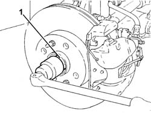
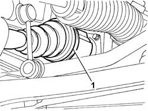
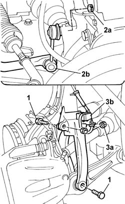
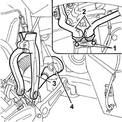
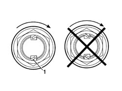

2710A10 DRIVE SHAFT with joints (one), left or right - R.R.
- Path
- Procedures > 27 AXLE > 2710 FRONT AXLE > 2710A DRIVESHAFTS AND JOINTS > 2710A10 DRIVE SHAFT with joints (one), left or right - R.R.
- Kind
- repair procedure (removal / refitting; the operation number is the code)
- Applies to
- all engines; all production periods
- Interactive page
- https://sloeber94.github.io/elrnDB-lThss/en/#/78454
Applies to: all engines; all production periods
 Removing
Removing
 Refitting
Refitting- Position the vehicle on a lift.
See in Op. 4450B04 Right FRONT WHEEL (one) - R.R.
- Raise the lift.
See in Op. 7055B42 FRONT WHEEL ARCH LINER (one), left or right - R.R.
See in Op. 7055B64 Engine compartment DUST SEAL in front wheel arch (one), left or right - R.R.
1. Using a hammer and chisel, remove the staking from the nut fixing the wheel hub and then undo it.

Applies to: all engines; all production periods
1. Disconnect the right driveshaft band fixing it to the intermediate driveshaft.

Applies to: all engines; all production periods
1. Undo the fixing bolts.
2. Undo the fixing nut (2a) and disconnect the end of the anti-roll bar (2b).
3. Undo the fixing nut (3a) and move the accelerator sensor (3b) aside.

Applies to: all engines; all production periods
1. Undo the fixing bolts.
2. Separate the two heads from the suspension housing.
3. Remove the suspension fork.
4. Move the steering knuckle back and release the driveshaft three-lobe joint from the housing in the intermediate shaft, then remove the right driveshaft.

Applies to: all engines; all production periods
Refitting
Removing- Check that the driveshaft is intact.
- Check that the boots are not damaged and that they contain the lubricating grease.
- The boot must be replaced if it shows signs of wear.
 | Description | Qty. | Component | Type | Classification |
|---|---|---|---|---|---|
. | TUTELA MRM ZERO | 140 ± 10 | DRIVESHAFT CONSTANT VELOCITY JOINTS | Grease |
- Fit the driveshaft in the housing on the intermediate driveshaft.
- Fit the suspension fork on the shock absorber.
- Return the steering knuckle to its original position checking that the driveshaft is fitted in the housing on the intermediate driveshaft.
- Secure the ends in the special housings in the suspension and tighten the fixing bolts to torque.
 | Value - daNm | Fastening | Component | Ø |
|---|---|---|---|---|
. | 3.4 | Bolt | FRONT SHOCK ABSORBERS (S.M.) | M8 |
- Tighten the bolts fixing the forks to torque.
| Value - daNm | Fastening | Component | Ø |
|---|---|---|---|---|
. | 9 | Bolt | FRONT DAMPER FORK ON WISHBONE | M12 |
| Value - daNm | Fastening | Component | Ø |
|---|---|---|---|---|
. | 11.6 | Bolt | FRONT DAMPER FORK ON WISHBONE | M12 X 1.25 |
- Tighten the nuts fixing the anti-roll bar track rod ends to torque.
| Value - daNm | Fastening | Component | Ø |
|---|---|---|---|---|
. | 5.5 | Nut | FRONT ANTI-ROLL BAR JOINTS | M10 X 1.25 |
- Fit the acceleration sensor in the housing on the fork and secure it using the nut.
- Secure the driveshaft to the intermediate driveshaft using new bands.
- Tighten the wheel hub fixing nut to torque.
| Value - daNm | Fastening | Component | Ø |
|---|---|---|---|---|
. | 7+ 55° | Nut | FRONT HUBS COMPLETE WITH BEARING | M22 |
1. Proceed with staking the nut following the illustration below.

Applies to: all engines; all production periods
See in Op. 7055B64 Engine compartment DUST SEAL in front wheel arch (one), left or right - R.R.
See in Op. 7055B42 FRONT WHEEL ARCH LINER (one), left or right - R.R.
- Lower the lift.
See in Op. 4450B04 Right FRONT WHEEL (one) - R.R.
- Remove the vehicle from the lift.
Topics linked from this page (3)
- 4450B04 Right FRONT WHEEL (one) - R.R.
- 7055B42 FRONT WHEEL ARCH LINER (one), left or right - R.R.
- 7055B64 Engine compartment DUST SEAL in front wheel arch (one), left or right - R.R.